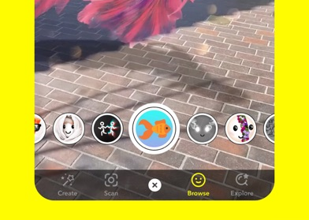

这一版不是"参考"，是把抖音 / Snapchat / 小红书 三个现网 App 的捕捉屏结构原样搬过来，左边是真截图、右边是我的屏，编号逐条对上。
抖音给「大圆快门 + 快门上一排带字模式」；Snapchat 给「白环空心快门 + 饱和药丸主按钮」；小红书给「内容缩略图在后 + 底部一枚饱和药丸」。
每个图标都带字，颜色走 palette 规则①。
真截图 · Snapchat 捕捉屏

快门是白环空心圆，两侧一排镜头小圆；底排带字 tab（Create / Snap / Browse / Explore）。
→
1白环空心快门：左图 Snapchat 那枚白环 = 右图我的快门外环恒白、圆心换色相，切到链接=宝蓝。
3饱和药丸主按钮：出处是下一组小红书那枚红药丸「发布笔记」= 右图底部随色相变的药丸（链接态文案=粘贴链接）；捕捉态没内容时不出现，抄抖音。
2模式排换选中：结构不动，只有下划条和快门圆心换色——所以各态不割裂。